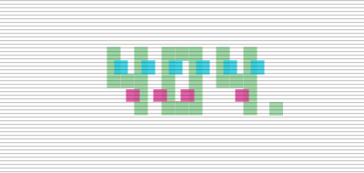

You only get here by finding it. It's also the least finished lab: for now it's the 404 page. What matters is where the idea came from.

I've been working through PortSwigger's Web Security Academy labs. So far I've finished the server-side vulnerabilities and cross-site scripting in all three flavours: reflected, stored and DOM-based.
Rule: learn the neighbouring discipline properly, not as a tourist.
What I noticed is how much the practitioners enjoy the little things. A small find, a detail someone spotted that others walked past, tickles them a lot.
Rule: delight lives in the details most people walk past.
That reaction felt familiar. It's the same feeling as finding an easter egg in a game: something hidden on purpose, rewarding the person who looked. Finding hidden things seems to be what this whole scene runs on, so I wanted to build one.
Rule: hide something good, and let curiosity be the key.
Scroll to the bottom of the labs index, then keep scrolling. Three more pushes and a third card appears. It remembers that you found it, and the way in is a plain scroll, with no secret menu or button to give it away. Once it's there you can send it back into hiding with "Hide again", and find it all over again.
Rule: the discovery is the feature.
A page that says nothing lives here seemed the right joke for a lab you had to dig for. It's also a placeholder: I'd rather build something real from what I'm learning than ship a gimmick, and I don't know yet what that is.
Rule: be honest about what's unfinished.